打造自助式 Java API 部署平台，部署時間由 15 分鐘縮短至 3 分鐘，釋放 95% 日常部署干擾，每月節省 60+ 小時資深工程師工時。
規劃混合雲資料庫讀寫分離與異地備援，徹底解決地端 Disk I/O 競爭，將 RTO 由 8 小時大幅縮短至 60 分鐘（提升 88%）。
以開源 Wazuh/ELK 替代商業 SIEM 年省 NT$ 200,000+；Let's Encrypt 自動憑證年省 NT$ 100,000+；雲端帳務自動化年省 90+ 小時。
主導雲端部門與企業首度高分通過外部 ISO 27001 認證；以自動化主動防禦機制取代傳統 SOC L1 人力，年省 2,000+ 工時。
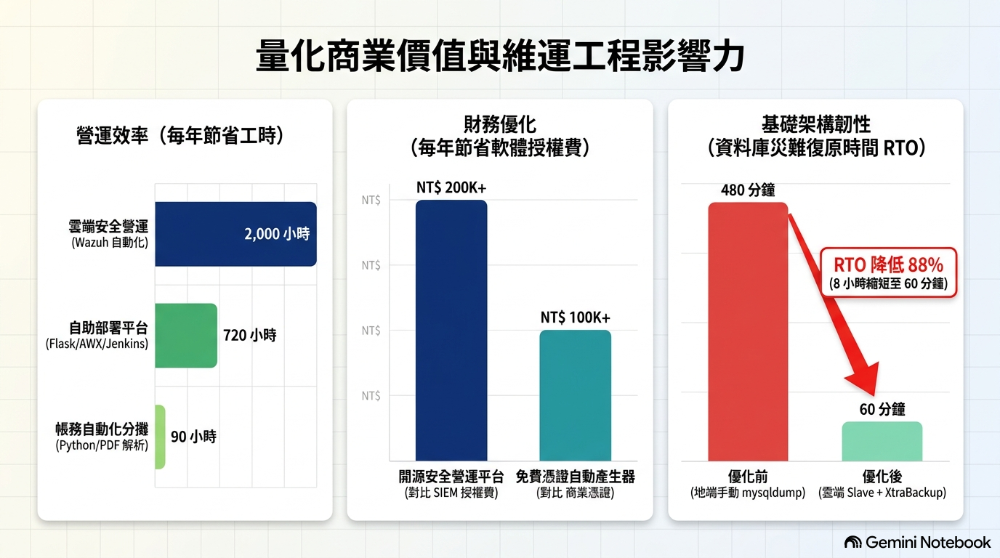
缺乏商業 SIEM 預算，AWS 多帳號環境缺乏集中監控，WAF 防火牆僅能被動阻擋，且多人共用環境常發生未通知之 EC2 變更或 sudo 提權行為。
設計「應變自主權隨偵測信心度遞增」雙軌平台：1. 情資軌：輪詢 VirusTotal API 輔助決策；2. 行為軌：Wazuh 分析 Nginx 日誌，1小時內異常達標自動呼叫 Webhook 並透過 awscli 寫入 AWS WAF 封鎖。
零軟體授權費（年省 NT$ 200K+）通過 ISO 27001 審驗；自動化防禦替代 SOC L1 人力，年省 2,000+ 工時。
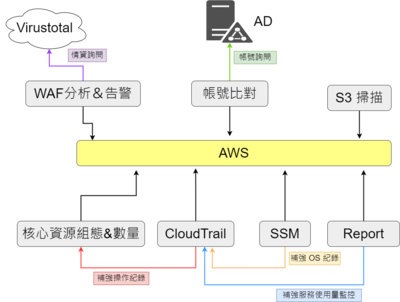
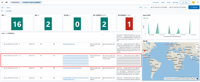
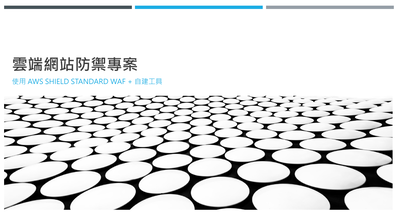
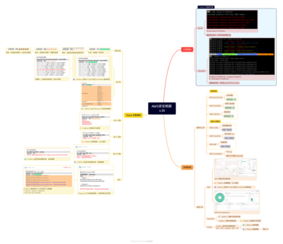
WAF 攻擊日誌專業門檻高，非資安背景之網站管理者與前端開發人員無法判讀攻擊風險，跨部門溝通成本高昂。
建置 AI 輔助分析流水線，將 WAF Log 去識別化後提交至 Gemini Flash 2.5 AI 模型，自動生成攻擊摘要、風險等級評估與前端程式碼修補建議。
賦能各網站管理者自主進行第一線安全評估，安全事件判讀效率提升 80%。
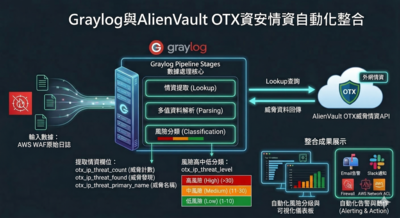
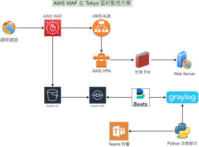
12 台主機承載 36 隻高併發 Java APIs，更版極度頻繁，高度依賴二線資深工程師手動 SSH 操作，造成維運瓶頸。
整合 Flask + AWX + Jenkins 打造圖形化部署 Web 平台，「隱藏底層 Linux 指令」，加入部署狀態紀錄與一鍵回滾（Rollback）機制，安全下放操作權限。
單隻 API 部署時間由 15 分鐘縮短至 3 分鐘；95% 的日常更版由一線值班人員獨立完成，每月節省 60+ 小時資深工程師工時。
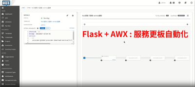
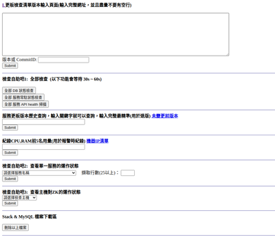
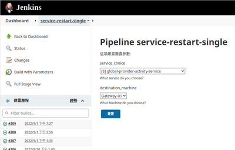
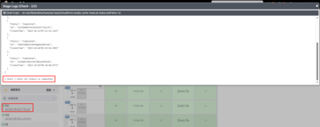
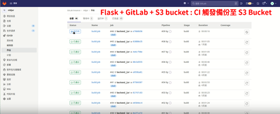
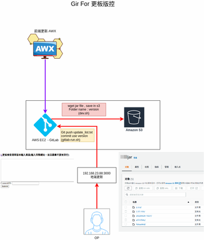
地端 MySQL 資料量龐大，傳統 mysqldump 備份鎖表且吃滿 Disk I/O；Slave 容易失效且重建需耗時 8 小時（RTO=8h）。
將 MySQL Slave 節點延伸至 AWS 實施讀寫分離；導入 Percona XtraBackup 於 AWS Slave 執行非侵入式熱備份並儲存於 AWS NFS，並建立追日誌復原策略。
徹底解鎖地端 VMware 硬體資源競爭；資料庫災難復原時間（RTO）由 8 小時大幅縮短至 60 分鐘（復原效率提升 88%）。
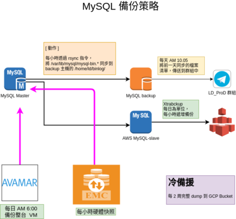
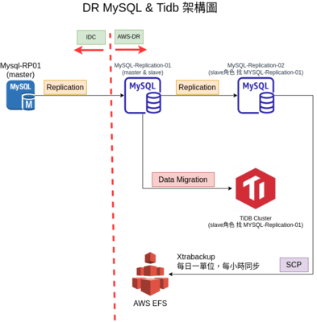
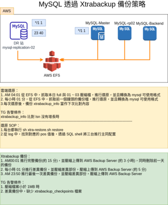
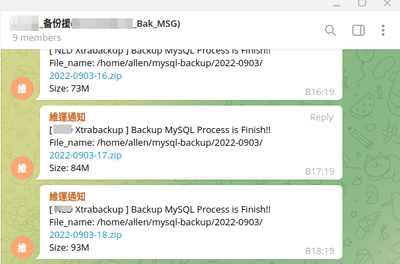
公司管理數十個企業網域，商業 SSL 憑證採購成本高昂，且人工手動更換極易因疏漏造成憑證過期、服務中斷的重大風險。
設計 Let's Encrypt 憑證自動化管理機制，將憑證申請、DNS 驗證、自動定時更新與 Web 伺服器部署全面自動化。
每年節省約 NT$ 100,000 商業憑證採購費用，徹底消除憑證過期造成的服務停機風險。
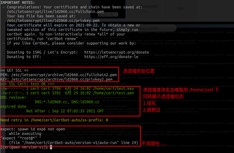
多個開發部門共用 AWS 帳號，每月收到 PDF 帳單需人工比對 Account、複製數字至 Excel 並郵寄各主管，耗時 1 整天（8小時）且易生出錯。
以 Python 開發自動化帳務處理工具（pdf_parse + xlwings + smtplib），自動解析 PDF 明細、對照部門 Accounts、渲染 Excel 明細並生成 Gmail 草稿。
每月處理時間由 1 天縮短至 30–60 分鐘，每年節省 90+ 小時行政工時，實現零帳務錯誤率。
雲端服務部門成立需通過 ISO 27001 外部認證，但缺乏標準化架構文件、資產清冊及可追蹤的變更稽核證據。
擔任 Cloud ISO 27001 主要被稽核窗口與文管，設計以 Google Form ➔ Google Sheet 為核心的輕量變更流程，建立完整稽核證據鏈。
協助雲端部門首度高分通過外部 ISO 27001 認證，建立低成本且嚴謹符合合規規範的變更管理制度。
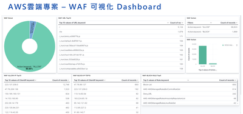
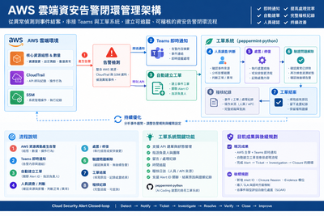
陽明海運數 TB 歷史郵件資料轉移面臨原廠工具瓶頸；南山產物保險機房搬遷後郵件服務發生網路延遲與效能異常。
親赴現場分析底層資料結構，編寫高容錯資料移轉腳本；運用 Wireshark 封包分析定位機房搬遷後的網路通訊瓶頸，並以 JMeter 執行高併發壓測驗證。
安全清洗並移轉數 TB 郵件歷史資產；完成產險機房搬遷後之穩定性驗證，大幅降低系統停機營運風險。
電子書產品安裝繁瑣，每次皆需資深工程師親赴客戶機房手動安裝數天，且易因個人習慣產生環境配置差異與售後排障困難。
建置 CentOS Kickstart 自動安裝平台，將 OS、套件依賴與 Kernel 參數調校（sysctl.conf）全面規格化與模組化。
現場部署時間由數天縮短至數小時；部署 SOP 規格化，降低對資深工程師的依賴與人力派遣成本。
代理之 Linux 產品原廠缺乏備份還原機制，資料損壞時需頻繁派遣工程師赴現場救援，售後維護成本極高。
以 Bash 編寫資料庫與系統備份腳本，結合 Dialog 模組打造直覺的防呆互動式文字選單。
無中生有賦予產品備份與還原能力，非技術客戶可一鍵自主備份還原，大幅削減售後派遣與維修成本。
| 雲端平台 (Cloud) | AWS (EC2, S3, CloudFront, Lambda, DynamoDB, RDS, IAM, WAF, CloudTrail, SSM, Route53, KMS, VPC, Cost Explorer)、GCP (Compute Engine, Cloud Armor)、Aliyun |
|---|---|
| 作業系統 (OS) | CentOS、Red Hat Enterprise Linux (RHEL)、Ubuntu、Rocky Linux、Windows Server、FreeBSD |
| 自動化與 IaC | Ansible (IaC)、Jenkins、AWX、Flask (Web GUI)、Bash Script、Python |
| 資安與日誌分析 | OpenSearch / ELK Stack、Graylog、Wazuh (SIEM/XDR)、AWS WAF/Shield、VirusTotal API、AlienVault OTX、Wireshark、NSPA、JMeter |
| 資料庫與儲存 | MySQL、Percona XtraBackup、MySQL Replication (讀寫分離)、AWS NFS、Docker |
| Observability & 告警 | OpenSearch、ELK、Grafana、Graylog、Prometheus、Microsoft Teams / Slack Webhook 整合 |
| AI 與現代工作流 | Gemini Flash 2.5 (WAF Log 去識別化 AI 威脅分析與代碼修補建議) |
| 程式語言 | Python、Bash / Shell Script |
負責 AWS 雲端架構、資安治理（ISO 27001）、自動化監控與 OpenSearch/ELK 可觀測性平台建置。
負責 Linux 基礎架構、MySQL 混合雲災難復原（DR）、Flask/Jenkins/AWX 自助部署平台及 Let's Encrypt 憑證自動化。
負責 AWS 產品代管維運、Python 帳務自動化解析，並擔任雲端部門首度通過 ISO 27001 外部稽核的主要負責人。
負責大型企業郵件備存、郵件稽核與資安產品導入，主導陽明海運數 TB 備存郵件移轉與南山產險機房搬遷排障。
負責 CentOS Kickstart 自動化安裝平台建置、Bash+Dialog 互動式備份還原工具開發及 Linux 系統標準化 SOP。